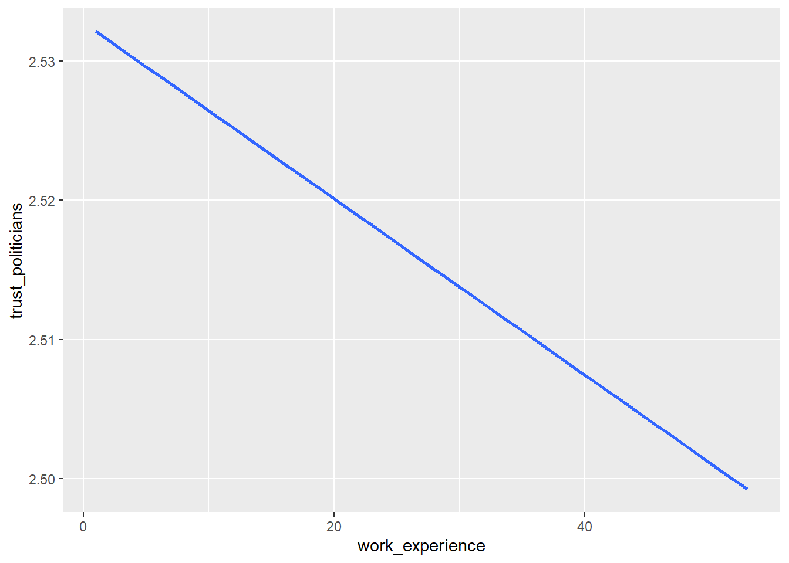
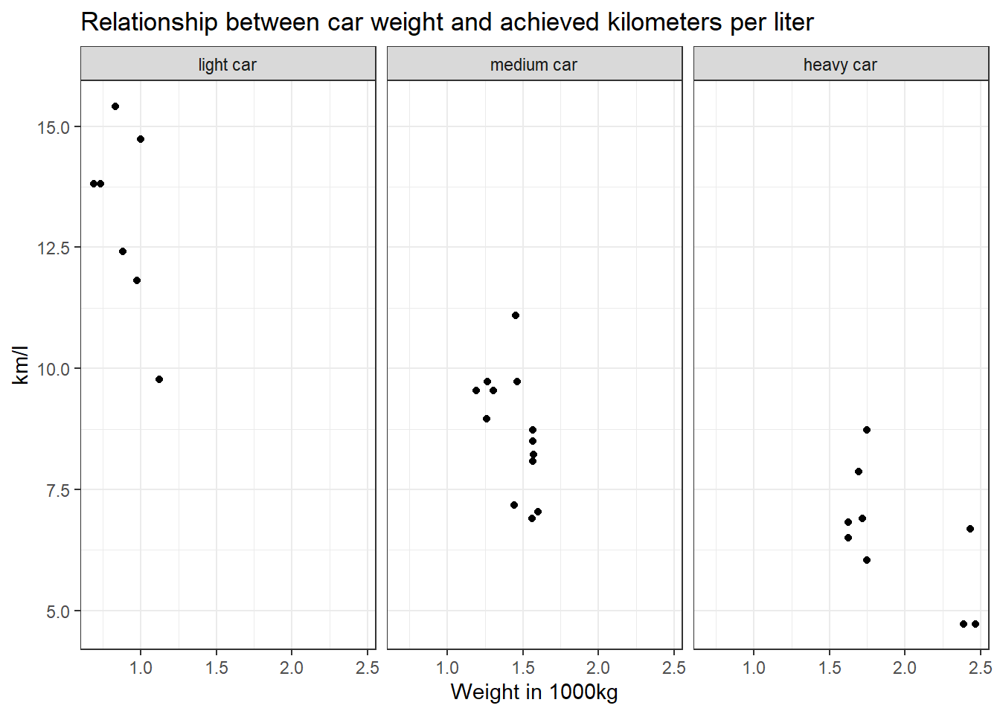
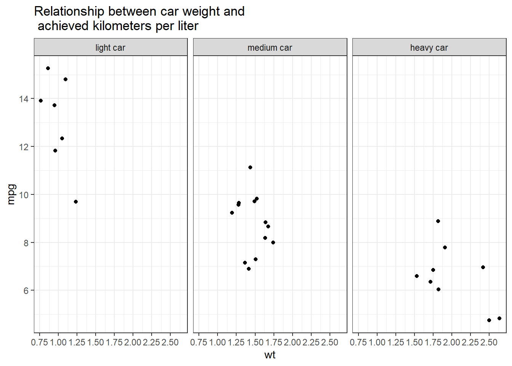
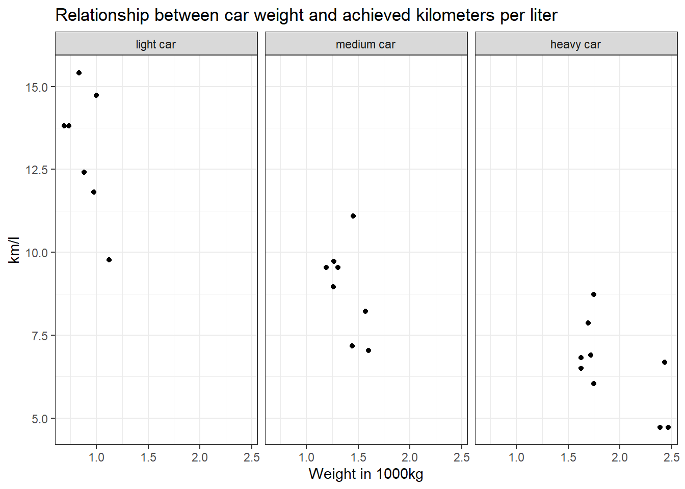
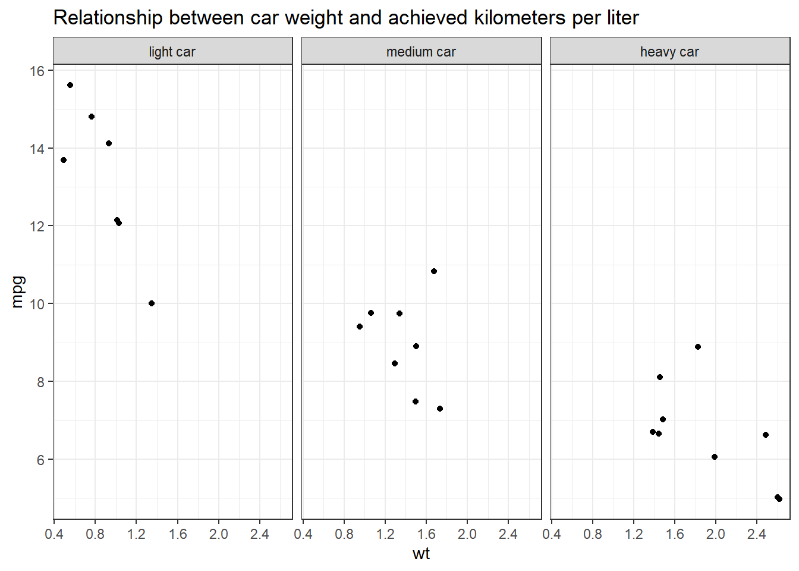

Solutions
This is where you’ll find solutions for all of the tutorials.
Solutions for Exercise 1
Task 1
Below you will see multiple choice questions. Please try to identify the correct answers. 1, 2, 3 and 4 correct answers are possible for each question.
1. What panels are part of RStudio?
Solution:
- source (x)
- console (x)
- packages, files & plots (x)
2. How do you activate R packages after you have installed them?
Solution:
- library() (x)
3. How do you create a vector in R with elements 1, 2, 3?
Solution:
- c(1,2,3) (x)
4. Imagine you have a vector called ‘vector’ with 10 numeric elements. How do you retrieve the 8th element?
Solution:
- vector[8] (x)
5. Imagine you have a vector called ‘hair’ with 5 elements: brown, black, red, blond, other. How do you retrieve the color ‘blond’?
Solution:
- hair[4] (x)
Task 2
Create a numeric vector with 8 values and assign the name age to the vector. First, display all elements of the vector. Then print only the 5th element. After that, display all elements except the 5th. Finally, display the elements at the positions 6 to 8.
Solution:
## [1] 65 52 73 71 80 62 68 87## [1] 80## [1] 65 52 73 71 62 68 87## [1] 62 68 87Task 3
Create a non-numeric, i.e. character, vector with 4 elements and assign the name eye_color to the vector. First, print all elements of this vector to the console. Then have only the value in the 2nd element displayed, then all values except the 2nd element. At the end, display the elements at the positions 2 to 4.
Solution:
## [1] "blue" "green" "brown" "grey"## [1] "green"## [1] "blue" "brown" "grey"## [1] "green" "brown" "grey"## [1] "green"## [1] "blue" "brown" "grey"## [1] "green" "brown" "grey"Solutions for Exercise 2
Task 1
Download the “WoJ_names.csv” from GESIS Moodle and put it into the folder that you want to use as working directory.
Set your working directory and load the data into R by saving it into a source object called data. Note: This time, it’s a csv that is separated by semicolons, not by commas.
Solution:
Task 2
Now, print only the column to the console that shows the trust in
government. Use the $ operator first. Then try to achieve the same
result using the subsetting operators, i.e. [].
Solution:
## NULL## [1] 0 0 1 1 0 1 0 1 1 1 1 0 0 0 0 0 0 1 1 1 1 0 0 0 0 1 0 1 0 0 0 1Solutions for Exercise 3
Task 1
Below you will see multiple choice questions. Please try to identify the correct answers. 1, 2, 3 and 4 correct answers are possible for each question.
1. What are the main characteristics of tidy data?
Solution:
- Every observation is a row. (x)
2. What are dplyr functions?
Solution:
mutate()(x)
3. How can you sort the eye_color of Star Wars characters from Z to A?
Solution:
starwars_data %>% arrange(desc(eye_color))(x)starwars_data %>% select(eye_color) %>% arrange(desc(eye_color))
4. Imagine you want to recode the height of the these characters. You want to have three categories from small and medium to tall. What is a valid approach?
Solution:
starwars_data %>% mutate(height = case_when(height<=150~"small",height<=190~"medium",height>190~"tall"))
5. Imagine you want to provide a systematic overview over all hair colors and what species wear these hair colors frequently (not accounting for the skewed sampling of species)? What is a valid approach?
Solution:
starwars_data %>% group_by(hair_color, species) %>% summarize(count = n()) %>% arrange(hair_color)
Task 2
It’s your turn now. Load the starwars data like this:
library(dplyr) # to activate the dplyr package
starwars_data <- starwars # to assign the pre-installed starwars data set (dplyr) into a source object in our environmentSolution:
How many humans are contained in the starwars dataset overall?
First, solve this task using filter() only.
## # A tibble: 35 × 14
## name height mass hair_color skin_color eye_color birth_year sex gender
## <chr> <int> <dbl> <chr> <chr> <chr> <dbl> <chr> <chr>
## 1 Luke Sk… 172 77 blond fair blue 19 male mascu…
## 2 Darth V… 202 136 none white yellow 41.9 male mascu…
## 3 Leia Or… 150 49 brown light brown 19 fema… femin…
## 4 Owen La… 178 120 brown, gr… light blue 52 male mascu…
## 5 Beru Wh… 165 75 brown light blue 47 fema… femin…
## 6 Biggs D… 183 84 black light brown 24 male mascu…
## 7 Obi-Wan… 182 77 auburn, w… fair blue-gray 57 male mascu…
## 8 Anakin … 188 84 blond fair blue 41.9 male mascu…
## 9 Wilhuff… 180 NA auburn, g… fair blue 64 male mascu…
## 10 Han Solo 180 80 brown fair brown 29 male mascu…
## # ℹ 25 more rows
## # ℹ 5 more variables: homeworld <chr>, species <chr>, films <list>,
## # vehicles <list>, starships <list>Next, solve it by combining filter() with summarize(count = n()).
## # A tibble: 1 × 1
## count
## <int>
## 1 35Finally, try to solve it with count().
## # A tibble: 3 × 2
## `species == "Human"` n
## <lgl> <int>
## 1 FALSE 48
## 2 TRUE 35
## 3 NA 4Task 3
Use mutate() and case_when() to create a new column height_group with:
- “short” if height < 140
- “medium” if height < 180
- “tall” otherwise.
Solution:
Task 4
How many humans are contained in starwars by height_group? (Hint: You’ll need to chain multiple functions. Remember that summarize() has a best friend that will help you solve this task. :))
Solution:
## # A tibble: 3 × 2
## height_group count
## <chr> <int>
## 1 medium 13
## 2 tall 17
## 3 <NA> 5Task 5
What is the most common height_group among Star Wars characters? (Hint: You’ll need to chain multiple functions, but one of them should be arrange())__
Solution:
## # A tibble: 4 × 2
## height_group count
## <chr> <int>
## 1 tall 44
## 2 medium 27
## 3 short 10
## 4 <NA> 6Alternatively, you could use the count() function:
## # A tibble: 4 × 2
## height_group n
## <chr> <int>
## 1 tall 44
## 2 medium 27
## 3 short 10
## 4 <NA> 6Task 6
What is the average mass of Star Wars characters that are not human and
have yellow eyes? (Hint: You’ll need to calculate descriptive statistics and remove all NAs.)
Solution:
starwars_data %>%
filter(species != "Human" & eye_color == "yellow") %>%
summarize(mean_mass = mean(mass, na.rm = TRUE))## # A tibble: 1 × 1
## mean_mass
## <dbl>
## 1 74.1Task 7
Compare the mean, median, and standard deviation of mass for all humans
and droids. (Hint: You’ll need to calculate descriptive statistics and remove all NAs.)
Solution:
starwars_data %>%
filter(species == "Human" | species == "Droid") %>%
group_by(species) %>%
summarize(
M = mean(mass, na.rm = TRUE),
Med = median(mass, na.rm = TRUE),
SD = sd(mass, na.rm = TRUE)
)## # A tibble: 2 × 4
## species M Med SD
## <chr> <dbl> <dbl> <dbl>
## 1 Droid 69.8 53.5 51.0
## 2 Human 81.3 79 19.3Task 8
Create a new variable in which you store the mass in gram. Add it to the dataframe.
Solution:
starwars_data <- starwars_data %>%
mutate(gr_mass = mass * 1000)
starwars_data %>%
select(name, species, mass, gr_mass)## # A tibble: 87 × 4
## name species mass gr_mass
## <chr> <chr> <dbl> <dbl>
## 1 Luke Skywalker Human 77 77000
## 2 C-3PO Droid 75 75000
## 3 R2-D2 Droid 32 32000
## 4 Darth Vader Human 136 136000
## 5 Leia Organa Human 49 49000
## 6 Owen Lars Human 120 120000
## 7 Beru Whitesun Lars Human 75 75000
## 8 R5-D4 Droid 32 32000
## 9 Biggs Darklighter Human 84 84000
## 10 Obi-Wan Kenobi Human 77 77000
## # ℹ 77 more rowsSolutions for Exercise 4
First, load the library stringr (or the entire tidyverse).
We will work on real data in this exercise. But before that, we will test our regex on a simple “test” vector that contains hyperlinks of media outlets and webpages. So run this code and create a vector called “seitenURL” in your environment:
seitenURL <- c("https://www.bild.de", "https://www.kicker.at/sport", "http://www.mycoffee.net/fresh", "http://www1.neuegedanken.blog", "https://home.1und1.info/magazine/unterhaltung", "https://de.sputniknews.com/technik", "https://rp-online.de/nrw/staedte/geldern", "https://www.bzbasel.ch/limmattal/region-limmattal", "http://sportdeutschland.tv/wm-maenner-2019")Task 1
Let’s get rid of the first part of the URL strings in our “seitenURL” vector, i.e., everything that comes before the name of the outlet (You will need to work with str_replace). Usually, this is some kind of version of “https://www.” or “http://www.” Try to make your pattern as versatile as possible! In a big data set, there will always be exceptions to the rule (e.g., “http://sportdeutschland.tv”), so try to match regex–i.e., types of characters instead of real characters–as often as you can!
seitenURL <-str_replace(seitenURL, "^(http)(s?)[:punct:]{3}(www[:punct:]|www1[:punct:]|w?)(de[:punct:]|home[:punct:])?", "")
# this matches all strings that start with http: '^(http)'
# this matches all strings that are either http or https: (s?) -> because '?' means "zero or more"
# followed by exactly one dot and two forwardslashes: '[:punct:]{3}'
# followed by either a www.: '(www[:punct:]'
# or followed by a www1.: '|www1[:punct:])'
# or followed by zero or one w (this is necessary for the rp-online-URL): 'w?'
# and followed by zero or one "de."s (this is necessary for the sputniknews-URL): (de[:punct:])?
# or followed by zero or one "home."s (this is necessary for the 1und1-URL): (home[:punct:])?
# and replaces the match with nothing, i.e., an empty string: ', ""'
seitenURL## [1] "bild.de"
## [2] "kicker.at/sport"
## [3] "mycoffee.net/fresh"
## [4] "neuegedanken.blog"
## [5] "1und1.info/magazine/unterhaltung"
## [6] "sputniknews.com/technik"
## [7] "rp-online.de/nrw/staedte/geldern"
## [8] "bzbasel.ch/limmattal/region-limmattal"
## [9] "sportdeutschland.tv/wm-maenner-2019"Task 2
Using the seitenURL vector, try to get rid of the characters that follow the media outlet (e.g., “.de” or “.com”).
seitenURL2 <- str_replace(seitenURL, "\\.(com|de|blog|net|tv|at|ch|info).*", "")
# this matches all strings that have exactly one dot: "\\."
# this matches either com, de, blog and many more: "(com|de|blog|net|tv|at|ch)"
# this matches any character zero or multiple times (this is necessary for, e.g., "/sport"): ".*"
seitenURL2## [1] "bild" "kicker" "mycoffee" "neuegedanken"
## [5] "1und1" "sputniknews" "rp-online" "bzbasel"
## [9] "sportdeutschland"If you want to avoid writing all the different page endings (de, info, etc.), you can develop a regex for that part as well (not necessary for a German data set, but for international URLs, this will be handy!).
seitenURL3 <- str_replace(seitenURL, "\\.[:alpha:]+.*", "")
# this matches exactly one dot: "\\."
# this matches one or more alphabetic characters: "[:alpha:]+"
# this matches any character zero or multiple times (this is necessary for, e.g., "/sport"): ".*"
seitenURL3## [1] "bild" "kicker" "mycoffee" "neuegedanken"
## [5] "1und1" "sputniknews" "rp-online" "bzbasel"
## [9] "sportdeutschland"Task 3
Use this command and adapt it with your patterns (it uses str_replace in combination with mutate):
url_data <- read.csv("seitenURLs.csv", header = TRUE)
url_data2 <- url_data %>%
mutate(seitenURL = str_replace_all(seitenURL, "^(http)(s?)[:punct:]{3}(www[:punct:]|www1[:punct:]|w?)(de[:punct:])?", "")) %>%
mutate(seitenURL = str_replace_all(seitenURL, "[:punct:]{1}(com|de|blog|net|tv|at|ch|info).*", ""))Task 4
The data set provides two additional, highly informative columns:
SeitenAnzahlTwitter and SeitenAnzahlFacebook. These columns show the
number of reactions (shares, likes, comments) received by each URL.
Now that you have extracted the media outlets, let us examine how much total engagement each media outlet received across all of its URLs.
To do this, you first need to group the data by media outlet using
group_by(). Then use summarize() to reduce all rows belonging to the
same media outlet to a single summary row.
Inside summarize(), you can use the function sum() to add up all
values of a variable within each group.
Create an R object named overview that contains:
- one row for each media outlet,
- the total Twitter engagement across all URLs of that outlet, and
- the total Facebook engagement across all URLs of that outlet.
Finally, sort your overview object to find out which media outlet
received the most engagement on Twitter and Facebook.
Hint: You will need group_by(), summarize(), sum() (inside of summarize(), it replaces the part where, e.g. mean() would be placed!), and arrange().
overview <- url_data2 %>%
group_by(seitenURL) %>%
summarize(twitter = sum(seitenAnzahlTwitter),
facebook = sum(seitenAnzahlFacebook))
overview %>%
arrange(desc(twitter))## # A tibble: 196 × 3
## seitenURL twitter facebook
## <chr> <int> <int>
## 1 sueddeutsche 531 4860
## 2 journalistenwatch 234 398
## 3 zeit 184 2087
## 4 deutschlandfunk 50 376
## 5 tagesspiegel 41 291
## 6 stern 35 1162
## 7 berliner-zeitung 33 13825
## 8 kraftfuttermischwerk 30 24
## 9 faz 29 40
## 10 gamestar 28 344
## # ℹ 186 more rows## # A tibble: 196 × 3
## seitenURL twitter facebook
## <chr> <int> <int>
## 1 berliner-zeitung 33 13825
## 2 sueddeutsche 531 4860
## 3 mz-web 3 4062
## 4 morgenpost 2 2921
## 5 zeit 184 2087
## 6 stern 35 1162
## 7 20min 15 1010
## 8 haz 0 698
## 9 taz 0 606
## 10 derwesten 6 528
## # ℹ 186 more rowsSolutions for Exercise 5 (optional)
NOTE: This part of the tutorial is not your typical beginner material — it covers some more advanced topics. The exercise is therefore OPTIONAL and is intended as a resource you can return to once you are ready to learn and apply these advanced data operations to your own projects. I do not expect you to complete these exercises during the beginner’s course.
Task 1
Solution:
path <- "advanced_practice/multiple_files"
file_paths <- list.files(
path = path,
pattern = "\\.csv$",
full.names = TRUE
)
file_paths## [1] "data/advanced_practice/multiple_files/journalist_batch_1.csv"
## [2] "data/advanced_practice/multiple_files/journalist_batch_2.csv"
## [3] "data/advanced_practice/multiple_files/journalist_batch_3.csv"Read and combine the files:
## respondent_id country employment work_experience autonomy_selection
## 1 J001 Switzerland Temporary 30 3
## 2 J002 Germany Full-time 2 5
## 3 J003 Austria Freelancer 21 4
## 4 J004 Germany Temporary 28 2
## 5 J005 Switzerland Temporary 13 2
## 6 J006 Switzerland Part-time 26 4
## 7 J007 Switzerland Full-time 9 5
## 8 J008 Austria Full-time 6 3
## 9 J009 Switzerland Part-time 17 1
## 10 J010 Switzerland Part-time 30 4
## 11 J011 Austria Part-time 3 2
## 12 J012 Germany Full-time 16 2
## 13 J013 Germany Full-time 1 3
## 14 J014 Germany Full-time 8 2
## 15 J015 Switzerland Temporary 11 1
## 16 J016 Switzerland Part-time 25 3
## 17 J017 Germany Part-time 31 4
## 18 J018 Austria Part-time 8 2
## 19 J019 Switzerland Full-time 22 4
## 20 J020 Germany Freelancer 4 1
## 21 J021 Switzerland Full-time 18 4
## 22 J022 Austria Full-time 17 1
## 23 J023 Germany Freelancer 24 1
## 24 J024 Germany Freelancer 31 4
## 25 J025 Austria Temporary 27 4
## 26 J026 Austria Freelancer 32 1
## 27 J027 Austria Temporary 13 3
## 28 J028 Austria Freelancer 25 2
## 29 J029 Switzerland Temporary 5 3
## 30 J030 Germany Freelancer 16 5
## 31 J031 Austria Part-time 30 3
## 32 J032 Austria Temporary 9 3
## 33 J033 Germany Full-time 16 4
## 34 J034 Switzerland Freelancer 21 5
## 35 J035 Germany Part-time 26 3
## 36 J036 Austria Full-time 17 3
## autonomy_emphasis trust_government ethics_1
## 1 2 4 1
## 2 5 4 4
## 3 5 4 2
## 4 1 4 5
## 5 2 5 3
## 6 4 4 2
## 7 4 2 1
## 8 4 3 3
## 9 1 1 2
## 10 5 2 5
## 11 2 4 2
## 12 3 2 2
## 13 2 4 1
## 14 3 4 1
## 15 1 2 1
## 16 4 1 2
## 17 3 1 1
## 18 3 1 2
## 19 3 2 5
## 20 1 2 1
## 21 3 3 3
## 22 1 4 1
## 23 2 1 5
## 24 3 3 4
## 25 4 5 4
## 26 1 3 2
## 27 2 3 1
## 28 2 2 3
## 29 3 5 1
## 30 5 2 2
## 31 3 4 2
## 32 4 2 4
## 33 3 3 3
## 34 5 2 4
## 35 3 1 4
## 36 4 1 5The combined dataset contains 36 respondents and 8 variables.
Task 2: Deal with messy column names
Solution:
messy_paths <- list.files(
path = "advanced_practice/multiple_files_messy",
pattern = "\\.csv$",
full.names = TRUE
)
combined_messy <- messy_paths %>%
map(~ read.csv2(.x, check.names = FALSE) %>%
setNames(
gsub(
"\\s+", "_",
tolower(trimws(names(.)))
)
)) %>%
bind_rows()Count the missing values in trust_government:
## respondent_id country employment work_experience autonomy_selection
## 1 J053 Germany Part-time 7 1
## 2 J054 Switzerland Temporary 22 4
## 3 J055 Switzerland Full-time 11 4
## 4 J056 Germany Part-time 32 5
## 5 J057 Austria Part-time 27 2
## 6 J058 Switzerland Full-time 17 5
## 7 J059 Germany Full-time 10 5
## 8 J060 Germany Temporary 20 1
## autonomy_emphasis trust_government ethics_1
## 1 1 NA 3
## 2 5 NA 5
## 3 5 NA 3
## 4 5 NA 4
## 5 2 NA 3
## 6 5 NA 2
## 7 4 NA 2
## 8 1 NA 1The result should be 8 missing values. The third file intentionally
does not contain the trust_government variable. bind_rows() creates
that column in the combined dataset and fills the unavailable values with
NA.
Task 3
Solution:
profiles <- read.csv2(
"advanced_practice/joins/journalist_profiles.csv"
)
attitudes <- read.csv2(
"advanced_practice/joins/journalist_attitudes.csv"
)Create the four joins:
inner_data <- inner_join(profiles, attitudes, by = "respondent_id")
left_data <- left_join(profiles, attitudes, by = "respondent_id")
right_data <- right_join(profiles, attitudes, by = "respondent_id")
full_data <- full_join(profiles, attitudes, by = "respondent_id")
inner_data## respondent_id country employment work_experience autonomy_selection
## 1 J111 Switzerland Freelancer 16 2
## 2 J112 Austria Temporary 19 3
## 3 J113 Germany Full-time 22 4
## 4 J114 Switzerland Part-time 25 5
## 5 J115 Austria Freelancer 28 1
## 6 J116 Germany Temporary 2 2
## 7 J117 Switzerland Full-time 5 3
## 8 J118 Austria Part-time 8 4
## 9 J119 Germany Freelancer 11 5
## 10 J120 Switzerland Temporary 14 1
## autonomy_emphasis trust_government innovation_attitude
## 1 4 3 5
## 2 5 4 1
## 3 1 5 2
## 4 2 1 3
## 5 3 2 4
## 6 4 3 5
## 7 5 4 1
## 8 1 5 2
## 9 2 1 3
## 10 3 2 4## respondent_id country employment work_experience autonomy_selection
## 1 J101 Germany Full-time 15 NA
## 2 J102 Switzerland Part-time 18 NA
## 3 J103 Austria Freelancer 21 NA
## 4 J104 Germany Temporary 24 NA
## 5 J105 Switzerland Full-time 27 NA
## 6 J106 Austria Part-time 30 NA
## 7 J107 Germany Freelancer 4 NA
## 8 J108 Switzerland Temporary 7 NA
## 9 J109 Austria Full-time 10 NA
## 10 J110 Germany Part-time 13 NA
## 11 J111 Switzerland Freelancer 16 2
## 12 J112 Austria Temporary 19 3
## 13 J113 Germany Full-time 22 4
## 14 J114 Switzerland Part-time 25 5
## 15 J115 Austria Freelancer 28 1
## 16 J116 Germany Temporary 2 2
## 17 J117 Switzerland Full-time 5 3
## 18 J118 Austria Part-time 8 4
## 19 J119 Germany Freelancer 11 5
## 20 J120 Switzerland Temporary 14 1
## autonomy_emphasis trust_government innovation_attitude
## 1 NA NA NA
## 2 NA NA NA
## 3 NA NA NA
## 4 NA NA NA
## 5 NA NA NA
## 6 NA NA NA
## 7 NA NA NA
## 8 NA NA NA
## 9 NA NA NA
## 10 NA NA NA
## 11 4 3 5
## 12 5 4 1
## 13 1 5 2
## 14 2 1 3
## 15 3 2 4
## 16 4 3 5
## 17 5 4 1
## 18 1 5 2
## 19 2 1 3
## 20 3 2 4## respondent_id country employment work_experience autonomy_selection
## 1 J111 Switzerland Freelancer 16 2
## 2 J112 Austria Temporary 19 3
## 3 J113 Germany Full-time 22 4
## 4 J114 Switzerland Part-time 25 5
## 5 J115 Austria Freelancer 28 1
## 6 J116 Germany Temporary 2 2
## 7 J117 Switzerland Full-time 5 3
## 8 J118 Austria Part-time 8 4
## 9 J119 Germany Freelancer 11 5
## 10 J120 Switzerland Temporary 14 1
## 11 J121 <NA> <NA> NA 2
## 12 J122 <NA> <NA> NA 3
## 13 J123 <NA> <NA> NA 4
## 14 J124 <NA> <NA> NA 5
## 15 J125 <NA> <NA> NA 1
## 16 J126 <NA> <NA> NA 2
## 17 J127 <NA> <NA> NA 3
## 18 J128 <NA> <NA> NA 4
## 19 J129 <NA> <NA> NA 5
## 20 J130 <NA> <NA> NA 1
## autonomy_emphasis trust_government innovation_attitude
## 1 4 3 5
## 2 5 4 1
## 3 1 5 2
## 4 2 1 3
## 5 3 2 4
## 6 4 3 5
## 7 5 4 1
## 8 1 5 2
## 9 2 1 3
## 10 3 2 4
## 11 4 3 5
## 12 5 4 1
## 13 1 5 2
## 14 2 1 3
## 15 3 2 4
## 16 4 3 5
## 17 5 4 1
## 18 1 5 2
## 19 2 1 3
## 20 3 2 4## respondent_id country employment work_experience autonomy_selection
## 1 J101 Germany Full-time 15 NA
## 2 J102 Switzerland Part-time 18 NA
## 3 J103 Austria Freelancer 21 NA
## 4 J104 Germany Temporary 24 NA
## 5 J105 Switzerland Full-time 27 NA
## 6 J106 Austria Part-time 30 NA
## 7 J107 Germany Freelancer 4 NA
## 8 J108 Switzerland Temporary 7 NA
## 9 J109 Austria Full-time 10 NA
## 10 J110 Germany Part-time 13 NA
## 11 J111 Switzerland Freelancer 16 2
## 12 J112 Austria Temporary 19 3
## 13 J113 Germany Full-time 22 4
## 14 J114 Switzerland Part-time 25 5
## 15 J115 Austria Freelancer 28 1
## 16 J116 Germany Temporary 2 2
## 17 J117 Switzerland Full-time 5 3
## 18 J118 Austria Part-time 8 4
## 19 J119 Germany Freelancer 11 5
## 20 J120 Switzerland Temporary 14 1
## 21 J121 <NA> <NA> NA 2
## 22 J122 <NA> <NA> NA 3
## 23 J123 <NA> <NA> NA 4
## 24 J124 <NA> <NA> NA 5
## 25 J125 <NA> <NA> NA 1
## 26 J126 <NA> <NA> NA 2
## 27 J127 <NA> <NA> NA 3
## 28 J128 <NA> <NA> NA 4
## 29 J129 <NA> <NA> NA 5
## 30 J130 <NA> <NA> NA 1
## autonomy_emphasis trust_government innovation_attitude
## 1 NA NA NA
## 2 NA NA NA
## 3 NA NA NA
## 4 NA NA NA
## 5 NA NA NA
## 6 NA NA NA
## 7 NA NA NA
## 8 NA NA NA
## 9 NA NA NA
## 10 NA NA NA
## 11 4 3 5
## 12 5 4 1
## 13 1 5 2
## 14 2 1 3
## 15 3 2 4
## 16 4 3 5
## 17 5 4 1
## 18 1 5 2
## 19 2 1 3
## 20 3 2 4
## 21 4 3 5
## 22 5 4 1
## 23 1 5 2
## 24 2 1 3
## 25 3 2 4
## 26 4 3 5
## 27 5 4 1
## 28 1 5 2
## 29 2 1 3
## 30 3 2 4The expected numbers of rows are:
inner_join(): 10left_join(): 20right_join(): 20full_join(): 30
The logic is:
inner_join()keeps cases found in both datasets;left_join()keeps all cases from the first dataset;right_join()keeps all cases from the second dataset;full_join()keeps all cases found in either dataset.
The bonus task can be solved with:
## respondent_id country employment work_experience
## 1 J101 Germany Full-time 15
## 2 J102 Switzerland Part-time 18
## 3 J103 Austria Freelancer 21
## 4 J104 Germany Temporary 24
## 5 J105 Switzerland Full-time 27
## 6 J106 Austria Part-time 30
## 7 J107 Germany Freelancer 4
## 8 J108 Switzerland Temporary 7
## 9 J109 Austria Full-time 10
## 10 J110 Germany Part-time 13Task 4
Solution:
## respondent_id country autonomy_selection_w1 autonomy_selection_w2
## 1 J201 Germany 2 2
## 2 J202 Switzerland 3 3
## 3 J203 Austria 4 5
## 4 J204 Germany 5 4
## 5 J205 Switzerland 1 1
## 6 J206 Austria 2 3
## 7 J207 Germany 3 3
## 8 J208 Switzerland NA 3
## 9 J209 Austria 5 5
## 10 J210 Germany 1 1
## trust_government_w1 trust_government_w2
## 1 4 3
## 2 5 5
## 3 1 1
## 4 2 NA
## 5 3 2
## 6 4 5
## 7 5 4
## 8 1 2
## 9 2 1
## 10 3 4Transform the data into long format:
panel_long <- panel_wide %>%
pivot_longer(
cols = -c(respondent_id, country),
names_to = c("measure", "wave"),
names_pattern = "(.*)_(w\\d+)",
values_to = "score"
)
panel_long## # A tibble: 40 × 5
## respondent_id country measure wave score
## <chr> <chr> <chr> <chr> <int>
## 1 J201 Germany autonomy_selection w1 2
## 2 J201 Germany autonomy_selection w2 2
## 3 J201 Germany trust_government w1 4
## 4 J201 Germany trust_government w2 3
## 5 J202 Switzerland autonomy_selection w1 3
## 6 J202 Switzerland autonomy_selection w2 3
## 7 J202 Switzerland trust_government w1 5
## 8 J202 Switzerland trust_government w2 5
## 9 J203 Austria autonomy_selection w1 4
## 10 J203 Austria autonomy_selection w2 5
## # ℹ 30 more rowsTransform it back into wide format:
panel_wide_again <- panel_long %>%
pivot_wider(
names_from = c(measure, wave),
names_sep = "_",
values_from = score
)
panel_wide_again## # A tibble: 10 × 6
## respondent_id country autonomy_selection_w1 autonomy_selection_w2
## <chr> <chr> <int> <int>
## 1 J201 Germany 2 2
## 2 J202 Switzerland 3 3
## 3 J203 Austria 4 5
## 4 J204 Germany 5 4
## 5 J205 Switzerland 1 1
## 6 J206 Austria 2 3
## 7 J207 Germany 3 3
## 8 J208 Switzerland NA 3
## 9 J209 Austria 5 5
## 10 J210 Germany 1 1
## # ℹ 2 more variables: trust_government_w1 <int>, trust_government_w2 <int>The original wide dataset contains 10 rows and 6 columns. The long version contains 40 rows and 5 columns.
Task 5
Select respondent_id and all autonomy variables:
## respondent_id autonomy_selection autonomy_emphasis
## 1 J001 3 2
## 2 J002 5 5
## 3 J003 4 5
## 4 J004 2 1
## 5 J005 2 2
## 6 J006 4 4
## 7 J007 5 4
## 8 J008 3 4
## 9 J009 1 1
## 10 J010 4 5
## 11 J011 2 2
## 12 J012 2 3
## 13 J013 3 2
## 14 J014 2 3
## 15 J015 1 1
## 16 J016 3 4
## 17 J017 4 3
## 18 J018 2 3
## 19 J019 4 3
## 20 J020 1 1
## 21 J021 4 3
## 22 J022 1 1
## 23 J023 1 2
## 24 J024 4 3
## 25 J025 4 4
## 26 J026 1 1
## 27 J027 3 2
## 28 J028 2 2
## 29 J029 3 3
## 30 J030 5 5
## 31 J031 3 3
## 32 J032 3 4
## 33 J033 4 3
## 34 J034 5 5
## 35 J035 3 3
## 36 J036 3 4Select numeric variables:
## work_experience autonomy_selection autonomy_emphasis trust_government
## 1 30 3 2 4
## 2 2 5 5 4
## 3 21 4 5 4
## 4 28 2 1 4
## 5 13 2 2 5
## 6 26 4 4 4
## 7 9 5 4 2
## 8 6 3 4 3
## 9 17 1 1 1
## 10 30 4 5 2
## 11 3 2 2 4
## 12 16 2 3 2
## 13 1 3 2 4
## 14 8 2 3 4
## 15 11 1 1 2
## 16 25 3 4 1
## 17 31 4 3 1
## 18 8 2 3 1
## 19 22 4 3 2
## 20 4 1 1 2
## 21 18 4 3 3
## 22 17 1 1 4
## 23 24 1 2 1
## 24 31 4 3 3
## 25 27 4 4 5
## 26 32 1 1 3
## 27 13 3 2 3
## 28 25 2 2 2
## 29 5 3 3 5
## 30 16 5 5 2
## 31 30 3 3 4
## 32 9 3 4 2
## 33 16 4 3 3
## 34 21 5 5 2
## 35 26 3 3 1
## 36 17 3 4 1
## ethics_1
## 1 1
## 2 4
## 3 2
## 4 5
## 5 3
## 6 2
## 7 1
## 8 3
## 9 2
## 10 5
## 11 2
## 12 2
## 13 1
## 14 1
## 15 1
## 16 2
## 17 1
## 18 2
## 19 5
## 20 1
## 21 3
## 22 1
## 23 5
## 24 4
## 25 4
## 26 2
## 27 1
## 28 3
## 29 1
## 30 2
## 31 2
## 32 4
## 33 3
## 34 4
## 35 4
## 36 5Select character variables:
## respondent_id country employment
## 1 J001 Switzerland Temporary
## 2 J002 Germany Full-time
## 3 J003 Austria Freelancer
## 4 J004 Germany Temporary
## 5 J005 Switzerland Temporary
## 6 J006 Switzerland Part-time
## 7 J007 Switzerland Full-time
## 8 J008 Austria Full-time
## 9 J009 Switzerland Part-time
## 10 J010 Switzerland Part-time
## 11 J011 Austria Part-time
## 12 J012 Germany Full-time
## 13 J013 Germany Full-time
## 14 J014 Germany Full-time
## 15 J015 Switzerland Temporary
## 16 J016 Switzerland Part-time
## 17 J017 Germany Part-time
## 18 J018 Austria Part-time
## 19 J019 Switzerland Full-time
## 20 J020 Germany Freelancer
## 21 J021 Switzerland Full-time
## 22 J022 Austria Full-time
## 23 J023 Germany Freelancer
## 24 J024 Germany Freelancer
## 25 J025 Austria Temporary
## 26 J026 Austria Freelancer
## 27 J027 Austria Temporary
## 28 J028 Austria Freelancer
## 29 J029 Switzerland Temporary
## 30 J030 Germany Freelancer
## 31 J031 Austria Part-time
## 32 J032 Austria Temporary
## 33 J033 Germany Full-time
## 34 J034 Switzerland Freelancer
## 35 J035 Germany Part-time
## 36 J036 Austria Full-timeReorder columns:
## respondent_id country employment work_experience autonomy_selection
## 1 J001 Switzerland Temporary 30 3
## 2 J002 Germany Full-time 2 5
## 3 J003 Austria Freelancer 21 4
## 4 J004 Germany Temporary 28 2
## 5 J005 Switzerland Temporary 13 2
## 6 J006 Switzerland Part-time 26 4
## 7 J007 Switzerland Full-time 9 5
## 8 J008 Austria Full-time 6 3
## 9 J009 Switzerland Part-time 17 1
## 10 J010 Switzerland Part-time 30 4
## 11 J011 Austria Part-time 3 2
## 12 J012 Germany Full-time 16 2
## 13 J013 Germany Full-time 1 3
## 14 J014 Germany Full-time 8 2
## 15 J015 Switzerland Temporary 11 1
## 16 J016 Switzerland Part-time 25 3
## 17 J017 Germany Part-time 31 4
## 18 J018 Austria Part-time 8 2
## 19 J019 Switzerland Full-time 22 4
## 20 J020 Germany Freelancer 4 1
## 21 J021 Switzerland Full-time 18 4
## 22 J022 Austria Full-time 17 1
## 23 J023 Germany Freelancer 24 1
## 24 J024 Germany Freelancer 31 4
## 25 J025 Austria Temporary 27 4
## 26 J026 Austria Freelancer 32 1
## 27 J027 Austria Temporary 13 3
## 28 J028 Austria Freelancer 25 2
## 29 J029 Switzerland Temporary 5 3
## 30 J030 Germany Freelancer 16 5
## 31 J031 Austria Part-time 30 3
## 32 J032 Austria Temporary 9 3
## 33 J033 Germany Full-time 16 4
## 34 J034 Switzerland Freelancer 21 5
## 35 J035 Germany Part-time 26 3
## 36 J036 Austria Full-time 17 3
## autonomy_emphasis trust_government ethics_1
## 1 2 4 1
## 2 5 4 4
## 3 5 4 2
## 4 1 4 5
## 5 2 5 3
## 6 4 4 2
## 7 4 2 1
## 8 4 3 3
## 9 1 1 2
## 10 5 2 5
## 11 2 4 2
## 12 3 2 2
## 13 2 4 1
## 14 3 4 1
## 15 1 2 1
## 16 4 1 2
## 17 3 1 1
## 18 3 1 2
## 19 3 2 5
## 20 1 2 1
## 21 3 3 3
## 22 1 4 1
## 23 2 1 5
## 24 3 3 4
## 25 4 5 4
## 26 1 3 2
## 27 2 3 1
## 28 2 2 3
## 29 3 5 1
## 30 5 2 2
## 31 3 4 2
## 32 4 2 4
## 33 3 3 3
## 34 5 2 4
## 35 3 1 4
## 36 4 1 5Select freelancers:
## respondent_id country employment work_experience autonomy_selection
## 1 J003 Austria Freelancer 21 4
## 2 J020 Germany Freelancer 4 1
## 3 J023 Germany Freelancer 24 1
## 4 J024 Germany Freelancer 31 4
## 5 J026 Austria Freelancer 32 1
## 6 J028 Austria Freelancer 25 2
## 7 J030 Germany Freelancer 16 5
## 8 J034 Switzerland Freelancer 21 5
## autonomy_emphasis trust_government ethics_1
## 1 5 4 2
## 2 1 2 1
## 3 2 1 5
## 4 3 3 4
## 5 1 3 2
## 6 2 2 3
## 7 5 2 2
## 8 5 2 4Select employment categories ending in "time":
## respondent_id country employment work_experience autonomy_selection
## 1 J002 Germany Full-time 2 5
## 2 J006 Switzerland Part-time 26 4
## 3 J007 Switzerland Full-time 9 5
## 4 J008 Austria Full-time 6 3
## 5 J009 Switzerland Part-time 17 1
## 6 J010 Switzerland Part-time 30 4
## 7 J011 Austria Part-time 3 2
## 8 J012 Germany Full-time 16 2
## 9 J013 Germany Full-time 1 3
## 10 J014 Germany Full-time 8 2
## 11 J016 Switzerland Part-time 25 3
## 12 J017 Germany Part-time 31 4
## 13 J018 Austria Part-time 8 2
## 14 J019 Switzerland Full-time 22 4
## 15 J021 Switzerland Full-time 18 4
## 16 J022 Austria Full-time 17 1
## 17 J031 Austria Part-time 30 3
## 18 J033 Germany Full-time 16 4
## 19 J035 Germany Part-time 26 3
## 20 J036 Austria Full-time 17 3
## autonomy_emphasis trust_government ethics_1
## 1 5 4 4
## 2 4 4 2
## 3 4 2 1
## 4 4 3 3
## 5 1 1 2
## 6 5 2 5
## 7 2 4 2
## 8 3 2 2
## 9 2 4 1
## 10 3 4 1
## 11 4 1 2
## 12 3 1 1
## 13 3 1 2
## 14 3 2 5
## 15 3 3 3
## 16 1 4 1
## 17 3 4 2
## 18 3 3 3
## 19 3 1 4
## 20 4 1 5Select both groups:
## respondent_id country employment work_experience autonomy_selection
## 1 J002 Germany Full-time 2 5
## 2 J003 Austria Freelancer 21 4
## 3 J006 Switzerland Part-time 26 4
## 4 J007 Switzerland Full-time 9 5
## 5 J008 Austria Full-time 6 3
## 6 J009 Switzerland Part-time 17 1
## 7 J010 Switzerland Part-time 30 4
## 8 J011 Austria Part-time 3 2
## 9 J012 Germany Full-time 16 2
## 10 J013 Germany Full-time 1 3
## 11 J014 Germany Full-time 8 2
## 12 J016 Switzerland Part-time 25 3
## 13 J017 Germany Part-time 31 4
## 14 J018 Austria Part-time 8 2
## 15 J019 Switzerland Full-time 22 4
## 16 J020 Germany Freelancer 4 1
## 17 J021 Switzerland Full-time 18 4
## 18 J022 Austria Full-time 17 1
## 19 J023 Germany Freelancer 24 1
## 20 J024 Germany Freelancer 31 4
## 21 J026 Austria Freelancer 32 1
## 22 J028 Austria Freelancer 25 2
## 23 J030 Germany Freelancer 16 5
## 24 J031 Austria Part-time 30 3
## 25 J033 Germany Full-time 16 4
## 26 J034 Switzerland Freelancer 21 5
## 27 J035 Germany Part-time 26 3
## 28 J036 Austria Full-time 17 3
## autonomy_emphasis trust_government ethics_1
## 1 5 4 4
## 2 5 4 2
## 3 4 4 2
## 4 4 2 1
## 5 4 3 3
## 6 1 1 2
## 7 5 2 5
## 8 2 4 2
## 9 3 2 2
## 10 2 4 1
## 11 3 4 1
## 12 4 1 2
## 13 3 1 1
## 14 3 1 2
## 15 3 2 5
## 16 1 2 1
## 17 3 3 3
## 18 1 4 1
## 19 2 1 5
## 20 3 3 4
## 21 1 3 2
## 22 2 2 3
## 23 5 2 2
## 24 3 4 2
## 25 3 3 3
## 26 5 2 4
## 27 3 1 4
## 28 4 1 5Task 6
Solution:
advanced_summary <- profiles %>%
full_join(attitudes, by = "respondent_id") %>%
select(
respondent_id,
country,
employment,
work_experience,
starts_with("autonomy"),
trust_government
) %>%
filter(!is.na(employment)) %>%
filter(str_detect(employment, "Free")) %>%
group_by(country) %>%
summarize(
mean_autonomy = mean(autonomy_selection, na.rm = TRUE),
mean_experience = mean(work_experience, na.rm = TRUE),
n = n()
) %>%
arrange(country)
advanced_summary## # A tibble: 3 × 4
## country mean_autonomy mean_experience n
## <chr> <dbl> <dbl> <int>
## 1 Austria 1 24.5 2
## 2 Germany 5 7.5 2
## 3 Switzerland 2 16 1The important part of this task is not the exact formatting of the code, but the sequence of decisions: join → select → filter → group → summarize → arrange.
Solutions for Exercise 6
Task 1
Show how journalists’ work experience (work_experience) is associated
with their trust in politicians (trust_politicians). To do this,
create a very basic scatter plot using ggplot2 and the respective
ggplot() function. Use the aes() function inside ggplot() to map
variables to the visual properties. Use geom_point() to add points to
the plot.
Solution:

Task 2
Do more experienced journalists become less trusting in politicians? Add
this code to your plot to create a regression line:
+ geom_smooth(method = lm, se = FALSE).
What can you conclude from the regression line?
Solution:
WoJ %>% ggplot(aes(x = work_experience, y = trust_politicians)) +
geom_point() +
geom_smooth(method = lm, se = FALSE)
The regression line shows us that there is no relationship between work experience and trust in politicians. In other words, more experienced journalists do not become less trusting in politicians.
Task 3
Does the relationship between work experience and trust in politicians remain stable across different countries? Alternatively, does work experience influence trust in politicians differently depending on the specific country context?
Try to create a visualization to answer this question using
facet_wrap().
Solution:
WoJ %>% ggplot(aes(x = work_experience, y = trust_politicians)) +
geom_point() +
geom_smooth(method = lm, se = FALSE) +
facet_wrap(~country)
Task 4
In your current visualization, it may be challenging to discern cross-country differences. Let’s aim to create a visualization that illustrates these differences across countries more distinctly.
Remove the facet_wrap() and the geom_point() code line. This leaves
you with this graph:
WoJ %>% ggplot(aes(x = work_experience, y = trust_politicians)) +
geom_smooth(method = lm, se = FALSE)
Now, display every country in a separate color by using the color
argument inside the aes() function.
Solution:
WoJ %>% ggplot(aes(x = work_experience, y = trust_politicians, color = country)) +
geom_smooth(method = lm, se = FALSE)
Task 5
Add fitting labels to your plot. For example, set the main title to display: “Impact of Work Experience on Trust in Politicians”. The x-axis label should read “Years of Work Experience in Journalism”, and the y-axis label should read “Trust in Politicians on a 5-point Likert Scale”. The label for the color legend should be “Country”.
Solution:
WoJ %>% ggplot(aes(x = work_experience, y = trust_politicians, color = country)) +
geom_smooth(method = lm, se = FALSE) +
labs(
title = "Impact of Work Experience on Trust in Politicians",
x = "Trust in Politicians on a 5-point Likert Scale",
y = "Years of Work Experience in Journalism",
color = "Country"
)
Task 6
Add a nice theme that you like, e.g. theme_minimal(),
theme_classic() or theme_bw().
Solution:
WoJ %>% ggplot(aes(x = work_experience, y = trust_politicians, color = country)) +
geom_smooth(method = lm, se = FALSE) +
labs(
title = "Impact of Work Experience on Trust in Politicians",
x = "Trust in Politicians on a 5-point Likert Scale",
y = "Years of Work Experience",
color = "Country"
) +
theme_bw()
Solutions for Exercise 7
Task 1
Solution:
data %>% ggplot(aes(x = country, y = work_experience)) +
geom_boxplot() +
theme_bw() +
labs(x = "Country", y = "Work Experience (Years)", title = "Distribution of Work Experience by Country")
Task 2
Solution:
data %>%
ggplot(aes(x = work_experience, y = trust_government, color = country)) +
geom_point() +
theme_bw() +
labs(x = "Work Experience (Years)", y = "Trust in Government", color = "Country", title = "Trust in Government by Work Experience and Country")
Task 3
Solution:
data %>%
ggplot(aes(x = work_experience, y = trust_government, color = country)) +
geom_point() +
geom_text(aes(label = name), check_overlap = TRUE, hjust = 0, vjust = 0) +
theme_bw() +
labs(x = "Work Experience (Years)", y = "Trust in Government", color = "Country", title = "Trust in Government by Work Experience and Country")
Task 4
Solution:
data %>%
ggplot(aes(x = country, fill = employment)) +
geom_bar(position = "dodge") +
theme_bw() +
labs(x = "Country", y = "Count", fill = "Employment Type", title = "Employment Types by Country")
Alternative Solution: Those who prefer the width of the bars to be aligned can use this code:
data %>%
ggplot(aes(x = country, fill = employment)) +
geom_bar(position = position_dodge(preserve = "single")) +
theme_bw() +
labs(x = "Country", y = "Count", fill = "Employment Type", title = "Employment Types by Country")
Task 5
You can solve this exercise using two approaches. The first approach is to create a new variable called experience_level and save it in your original data set to be used for data visualization in the next, separate step:
Solution:
data <- data %>%
mutate(experience_level = case_when(
work_experience <= 10 ~ "Junior",
work_experience > 10 & work_experience <= 20 ~ "Mid-Level",
work_experience > 20 ~ "Senior"
))
data %>%
ggplot(aes(x = country, fill = employment)) +
geom_bar(position = "dodge") +
theme_bw() +
labs(x = "Country", y = "Count", fill = "Employment Type", title = "Employment Types by Country and Level of Experience") +
facet_wrap(~experience_level) +
theme(axis.text.x = element_text(angle = 45, hjust = 1))
The more elegant solution is to perform your data management in one go without saving the variable experience_level back into your original data set. Using this approach will help declutter your data because you won’t need to create and save a new variable that is only required for a single visualization:
data %>%
mutate(experience_level = case_when(
work_experience <= 10 ~ "Junior",
work_experience > 10 & work_experience <= 20 ~ "Mid-Level",
work_experience > 20 ~ "Senior"
)) %>%
ggplot(aes(x = country, fill = employment)) +
geom_bar(position = "dodge") +
theme_bw() +
labs(x = "Country", y = "Count", fill = "Employment Type", title = "Employment Types by Country and Level of Experience") +
facet_wrap(~experience_level) +
theme(axis.text.x = element_text(angle = 45, hjust = 1))
Solutions for Exercise 8
In this exercise, we will work with the mtcars data that comes pre-installed with dplyr.
library(tidyverse)
data <- as_tibble(mtcars) # the original data set is not in tidyverse-tibble format, so we need to reformat
# To make the data somewhat more interesting, let's set a few values to missing values:
data <- data %>%
mutate(wt = na_if(wt, 4.070))
data <- data %>%
mutate(mpg = na_if(mpg, 22.8))Task 1
Check the data set for missing values (NAs) and delete all observations that have missing values.
Solution:
You can solve this by excluding NAs in every single column:
data <- data %>%
# we'll now only keep observations that are NOT NAs in the following variables (remember that & = AND):
filter(!is.na(mpg) & !is.na(cyl) & !is.na(disp) & !is.na(hp) & !is.na(drat) & !is.na(wt) & !is.na(qsec) & !is.na(vs) & !is.na(am) & !is.na(gear) & !is.na(carb))Alternatively, excluding NAs from the entire data set works, too, but
you have not learned the drop_na()function in the tutorials:
Task 2
Let’s transform the weight wt of the cars. Currently, it’s given as Weight in 1000 lbs. I guess you are not used to lbs, so try to mutate wt to represent Weight in 1000 kg. 1000 lbs = 453.59 kg, so we will need to divide by 2.20.
Similarly, I think that you are not very familiar with the unit Miles per gallon of the mpg variable. Let’s transform it into Kilometer per liter. 1 m/g = 0.425144 km/l, so again divide by 2.20.
Solution:
Task 3
Now we want to group the weight of the cars in three categories: light, medium, heavy. But how to define light, medium, and heavy cars, i.e., at what kg should you put the threshold? A reasonable approach is to use quantiles (see Tutorial: summarize() [+ group_by()]). Quantiles divide data. For example, the 75% quantile states that exactly 75% of the data values are equal or below the quantile value. The rest of the values are equal or above it.
Use the lower quantile (0.25) and the upper quantile (0.75) to estimate two values that divide the weight of the cars in three groups. What are these values?
Solution:
You can use dplyrfor this job:
## # A tibble: 1 × 2
## LQ_wt UQ_wt
## <dbl> <dbl>
## 1 1.19 1.62Or you can use the tidycomm package:
## # A tibble: 1 × 3
## Variable p25 p75
## * <chr> <dbl> <dbl>
## 1 wt 1.19 1.6275% of all cars weigh 1.622727* 1000kg or less and 25% of all cars weigh 1.190909* 1000kg or less.
Task 4
Use the values from Task 3 to create a new variable wt_cat that divides the cars in three groups: light, medium, and heavy cars.
Solution:
You can use dplyr:
data <- data %>%
mutate(wt_cat = case_when(
wt <= 1.190909 ~ "light car",
wt < 1.622727 ~ "medium car",
wt >= 1.622727 ~ "heavy car"
))Or tidycomm:
Task 5
How many light, medium, and heavy cars are part of the data?
Solution:
You can solve this with the summarize(count = n() function:
## # A tibble: 3 × 2
## wt_cat count
## <chr> <int>
## 1 heavy car 9
## 2 light car 7
## 3 medium car 139 heavy cars, 13 medium cars, and 7 light cars.
Alternatively, you can also use the count() function:
## # A tibble: 3 × 2
## wt_cat n
## <chr> <int>
## 1 heavy car 9
## 2 light car 7
## 3 medium car 13Alternatively, you can use the tab_frequencies() fucntion of the
tidycomm:
## # A tibble: 3 × 5
## wt_cat n percent cum_n cum_percent
## * <chr> <int> <dbl> <int> <dbl>
## 1 heavy car 9 0.310 9 0.310
## 2 light car 7 0.241 16 0.552
## 3 medium car 13 0.448 29 1Task 6
Now sort this count of the car weight classes from highest to lowest.
Solution:
## # A tibble: 3 × 2
## wt_cat count
## <chr> <int>
## 1 medium car 13
## 2 heavy car 9
## 3 light car 7Alternatively, use tidycomm:
## # A tibble: 3 × 5
## wt_cat n percent cum_n cum_percent
## <chr> <int> <dbl> <int> <dbl>
## 1 medium car 13 0.448 29 1
## 2 heavy car 9 0.310 9 0.310
## 3 light car 7 0.241 16 0.552Task 7
Make a scatter plot to indicate how many km per liter (mpg) a car can drive depending on its weight (wt). Facet the plot by weight class (wt_cat).
Solution:
data %>%
mutate(wt_cat = factor(wt_cat, levels = c("light car", "medium car", "heavy car"))) %>%
ggplot(aes(x = wt, y = mpg)) +
geom_point() +
theme_bw() +
labs(title = "Relationship between car weight and achieved kilometers per liter", x = "Weight in 1000kg", y = "km/l") +
facet_wrap(~wt_cat)
Alternatively, you can use tidycomm:
data %>%
mutate(wt_cat = factor(wt_cat, levels = c("light car", "medium car", "heavy car"))) %>%
tidycomm::correlate(wt, mpg) %>%
tidycomm::visualize() +
labs(title = "Relationship between car weight and\n achieved kilometers per liter", x = "Weight in 1000kg", y = "km/l") +
theme_bw() +
facet_wrap(~wt_cat)
Task 8
Recreate the diagram from Task 7, but exclude all cars that weigh between 1.4613636 and 1.5636364 *1000kg from it.
Solution:
data %>%
filter(wt < 1.4613636 | wt > 1.5636364) %>%
mutate(wt_cat = factor(wt_cat, levels = c("light car", "medium car", "heavy car"))) %>%
ggplot(aes(x = wt, y = mpg)) +
geom_point() +
theme_bw() +
theme(legend.position = "none") +
labs(title = "Relationship between car weight and achieved kilometers per liter", x = "Weight in 1000kg", y = "km/l") +
facet_wrap(~wt_cat)
With tidycomm:
data %>%
filter(wt < 1.4613636 | wt > 1.5636364) %>%
mutate(wt_cat = factor(wt_cat, levels = c("light car", "medium car", "heavy car"))) %>%
tidycomm::correlate(wt, mpg) %>%
tidycomm::visualize() +
labs(title = "Relationship between car weight and achieved kilometers per liter", x = "Weight in 1000kg", y = "km/l") +
theme_bw() +
facet_wrap(~wt_cat)
Why would we use data %>% filter(wt < 1.4613636 | wt > 1.5636364)
instead of data %>% filter(wt > 1.4613636 | wt < 1.5636364)?
Let’s look at the resulting data sets when you apply those filters to compare them:
## # A tibble: 24 × 1
## wt
## <dbl>
## 1 1.19
## 2 1.31
## 3 1.57
## 4 1.62
## 5 1.45
## 6 1.70
## 7 1.72
## 8 2.39
## 9 2.47
## 10 2.43
## # ℹ 14 more rowsThe resulting table does not include any cars that weigh between
1.4613636 and 1.5636364. But if you use
data %>% filter(wt > 1.4613636 | wt < 1.5636364)…
## # A tibble: 29 × 1
## wt
## <dbl>
## 1 1.19
## 2 1.31
## 3 1.46
## 4 1.56
## 5 1.57
## 6 1.62
## 7 1.45
## 8 1.56
## 9 1.56
## 10 1.70
## # ℹ 19 more rows… cars that weigh between 1.4613636 and 1.5636364 are still included!
But why? The filter()function always keeps cases based on the
criteria that you provide.
In plain English, my solution code says the following: Take my dataset “data” and keep only those cases where the weight variable wt is less than 1.4613636 OR larger than 1.5636364. Put differently, the solution code says: Delete all cases that are greater than 1.4613636 but are also less than 1.5636364.
The wrong code, on the other hand, says: Take my dataset “data” and keep only those cases where the weight variable wt is greater than 1.4613636 OR smaller than 1.5636364. This is ALL the data because all your cases will be greater than 1.4613636 OR smaller than 1.5636364. You are not excluding any cars.